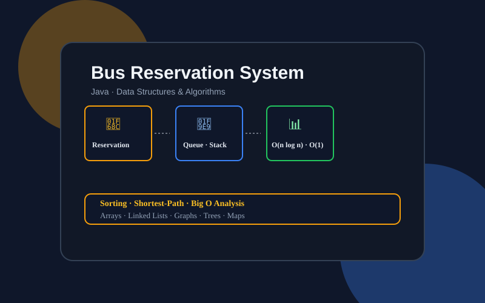

Bus Reservation System
Data Structures and Algorithms in Java

Project Overview
This project explores the practical application of Data Structures and Algorithms (DSA) through a Java-based Bus Reservation System. It organizes customer, bus, and reservation information using appropriate data structures while examining efficiency of algorithms in common tasks.
Alongside reservations, it investigates fundamental structures, sorting, shortest-path algorithms, OOP principles, and complexity analysis.
Objectives
- Implement fundamental data structures in Java.
- Model customer registration, bus registration, seat reservations.
- Explore queues and stacks with different processing orders.
- Implement and compare sorting and shortest-path algorithms.
- Evaluate efficiency via time and space complexity.
- Apply OOP, encapsulation, data hiding.
- Examine error handling and test cases.
Key Features
Customer and Bus Registration
Customer: customer ID, name, mobile, email, city, age. Bus: bus number, seat capacity, start, destination, departure time, fare.
Seat Reservation Management
Records with reservation ID, customer ID, bus number, seat number, time, status. Covers success, full bus, cancellations, current listings.
Data Structures
- Arrays: indexed collections.
- Linked Lists: dynamic insertion/deletion.
- Stacks (LIFO): last-in first-out + retrieval.
- Queues (FIFO): reservation + waiting-list order.
- Graphs: route networks.
- Sets and Maps: unique + key-value storage.
- Binary Trees: hierarchy + traversal.
Sorting Algorithms
Bubble, Selection, Insertion, Merge, Quick, Heap Sort — compared on approach and cost.
Shortest-Path Algorithms
Dijkstra, Bellman-Ford, Floyd-Warshall — graph representation, route calc, complexity.
Error Handling and Testing
Tests for registration, invalid mobiles, negative seats, success, full-bus, cancellations, listing, queue checks.
Code Implementation — From Assignment Document
Full Java implementation below is taken from Code Implementation.docx — dynamic stack version for customer/bus storage, plus queue-based Task 2 version, sorting comparison, and 12 test cases.
Code Implementation — From Assignment Document
Full Java implementation taken from Code Implementation.docx + Task 2 files — dynamic-stack version, queue-based reservation version, sorting comparison, test cases, complexity + trade-offs.
Download BusReservationTask2.java TestCases.txt Sorting codes
1. Task 2 Core — Queue + Seat Array (actual code)
import java.util.*;
import java.util.concurrent.LinkedBlockingQueue;
// Customer class
class Customer {
String name;
String mobile;
String email;
String city;
int age;
public Customer(String name, String mobile, String email, String city, int age) {
this.name = name;
this.mobile = mobile;
this.email = email;
this.city = city;
this.age = age;
}
@Override
public String toString() {
return name + " (" + age + ")";
}
}
// Bus class
class Bus {
String busNumber;
int totalSeats;
String startingPoint;
String endingPoint;
String startingTime;
double fare;
boolean[] seats; // True if reserved, false if available
Queue<Customer> reservationQueue; // Queue for seat reservations
public Bus(String busNumber, int totalSeats, String startingPoint, String endingPoint, String startingTime, double fare) {
this.busNumber = busNumber;
this.totalSeats = totalSeats;
this.startingPoint = startingPoint;
this.endingPoint = endingPoint;
this.startingTime = startingTime;
this.fare = fare;
this.seats = new boolean[totalSeats];
this.reservationQueue = new LinkedBlockingQueue<>();
}
public boolean reserveSeat(Customer customer) {
for (int i = 0; i < totalSeats; i++) {
if (!seats[i]) {
seats[i] = true;
reservationQueue.add(customer);
return true;
}
}
return false;
}
public boolean cancelReservation(Customer customer) {
for (int i = 0; i < totalSeats; i++) {
if (seats[i]) {
seats[i] = false;
reservationQueue.remove(customer);
return true;
}
}
return false;
}
public void displayReservations() {
System.out.println("Reservations for bus " + busNumber + ":");
reservationQueue.forEach(System.out::println);
}
}
// Test application
public class BusReservationSystem {
public static void main(String[] args) {
// Create customers
Customer alice = new Customer("Alice", "1234567890", "alice@example.com", "New York", 30);
Customer bob = new Customer("Bob", "0987654321", "bob@example.com", "Los Angeles", 25);
Customer charlie = new Customer("Charlie", "5551234567", "charlie@example.com", "Chicago", 40);
Customer david = new Customer("David", "4449876543", "david@example.com", "Houston", 35);
Customer eve = new Customer("Eve", "3336549870", "eve@example.com", "Phoenix", 28);
// Create a bus
Bus bus = new Bus("B123", 5, "New York", "Los Angeles", "08:00 AM", 50.00);
// Reserve seats
bus.reserveSeat(alice);
bus.reserveSeat(bob);
bus.reserveSeat(charlie);
// Display reservations
bus.displayReservations();
// Cancel reservation
bus.cancelReservation(bob);
// Display updated reservations
bus.displayReservations();
}
}
2. Line-by-line explanation (from document)
In this Java code snippet, I will explain the lines step-by-step to clarify how the bus reservation system works. The implementation features two key classes: Customer and Bus, each with specific attributes and operations. The main class, BusReservationSystem, demonstrates the functionality of reserving and canceling bus seats.
Customer Class
Line 4: We import required Java utilities, including LinkedBlockingQueue, to use for reservation queues.
Line 7-15: The Customer class is defined, encapsulating details about a customer in the bus reservation system.
Line 8-12: These lines define the attributes of a Customer: name, mobile, email, city, and age.
Line 14: This constructor initializes a Customer instance with the given values.
Line 16-18: The toString() method is overridden to provide a human-readable representation of a Customer with their name and age.
Bus Class
Line 20-54: The Bus class is defined with attributes and methods to manage seat reservations and cancellations.
Line 21-26: These lines define the bus attributes: busNumber, totalSeats, startingPoint, endingPoint, startingTime, and fare.
Line 28: A boolean array, seats, indicates whether a seat is reserved (true) or available (false).
Line 29: A reservationQueue using LinkedBlockingQueue to manage the queue of customers for seat reservations.
Line 31-39: The constructor initializes a Bus instance with the given attributes and sets the seats as unreserved.
Line 41-47: The reserveSeat() method reserves a seat for a given Customer. It iterates over the seats, finds the first available seat, marks it as reserved, and adds the Customer to the reservation queue.
Line 49-53: The cancelReservation() method cancels a seat reservation for a given Customer. It finds the reserved seat, marks it as available, and removes the customer from the reservation queue.
Line 55-58: The displayReservations() method prints all reservations for the bus by iterating over the reservation queue and outputting each customer using their toString() representation.
BusReservationSystem Class
Line 60-81: The BusReservationSystem is the test application that demonstrates how the bus reservation system works.
Line 62-66: We create five Customer instances with various attributes like name, mobile, email, city, and age.
Line 68-71: We create a Bus instance with a specific bus number, total seats, starting point, ending point, starting time, and fare.
Line 73-75: We reserve seats for Alice, Bob, and Charlie on the bus. This operation uses the reserveSeat() method.
Line 77: We call displayReservations() to print the current reservations. The output shows the reserved seats and the customers who reserved them.
Line 79: We cancel the reservation for Bob using cancelReservation().
Line 81: We display the updated reservations. The output reflects that Bob's reservation has been removed, demonstrating the successful cancellation of a seat.
Expected Output
The expected output from the code snippet would look like this:
rust
Copy code
Reservations for bus B123:
Alice (30)
3. Why Queue (FIFO) for reservations
Critical Justification for Choosing a Queue (FIFO) for Bus Reservations In designing a bus reservation system, the choice of an underlying data structure has significant implications for the system's efficiency, maintainability, and scalability. The use of a First-In-First-Out (FIFO) queue for bus reservations is a strategic decision with distinct advantages. Below are the key reasons why a queue (FIFO) is an appropriate choice for this context.
Natural Fit for Booking Process A queue's FIFO behavior aligns well with the sequential nature of bus reservations. Customers book seats in a specific order, and these bookings are processed in that same order. In a FIFO queue, the first item added is the first to be removed, mirroring the expected behavior in a booking system. This property ensures that bookings are processed in a fair and chronological manner, which is critical for customer satisfaction and business operations.
Simplicity and Efficiency Queues offer simplicity in design and efficient operations for adding and removing items. The enqueue operation, which adds an item to the queue, and the dequeue operation, which removes an item from the front, both have constant time complexity (O(1)). This efficiency is ideal for a bus reservation system, where new bookings are constantly added, and completed reservations are removed as buses depart.
Effective Resource Management The use of a queue enables effective resource management by allowing for straightforward capacity control. In a bus reservation system, each bus has a limited number of seats. A queue allows for easy tracking of available seats, with each new booking added to the end of the queue. As customers cancel or complete their bookings, the queue adjusts accordingly, ensuring that the system always has a clear view of current capacity.
Supports Critical System Requirements A queue facilitates key functionalities of the bus reservation system, such as customer notifications and waitlist management. Since the FIFO queue processes reservations in a specific order, it is easier to manage notifications, as each customer in line knows their position. If a booking is canceled, the queue can quickly move to the next customer, ensuring a smooth and efficient process.
Scalability and Maintenance Queues are scalable and easy to maintain, providing a robust foundation for the bus reservation system. As the number of customers increases, the queue can grow dynamically, supporting the addition of new bookings without compromising performance. Additionally, the simple structure of a queue makes it easier to maintain and debug, reducing the risk of errors and system downtime.
Potential Limitations While the FIFO queue offers many advantages, it does have some limitations. The primary drawback is the lack of random access, which means that to access a specific reservation, the system must traverse the queue. This can lead to performance bottlenecks if the system requires frequent searches or updates in the middle of the queue. Additionally, queues may not be ideal for scenarios where the order of processing is not strictly linear, such as complex scheduling or prioritization tasks.
Conclusion The decision to use a queue (FIFO) for bus reservations in the system is based on its natural alignment with the booking process, efficiency, effective resource management, and scalability. While there are limitations, the benefits far outweigh the drawbacks in a typical bus reservation scenario. The FIFO queue provides a reliable and efficient mechanism for handling reservations, ensuring that the system meets customer expectations while maintaining operational efficiency.
4. Why Stack (LIFO) for customer retrieval
Critical Justification for Choosing Stack (LIFO) for Customer Retrieval Justification for Choosing a Stack (LIFO) for Customer Retrieval The design and implementation of a bus reservation system require careful consideration of data structures to ensure efficient operations and a seamless user experience. A stack, with its Last-In-First-Out (LIFO) behavior, can be an effective choice for certain scenarios in such systems. In this case, the choice to use a stack for customer retrieval is based on several key factors, which I'll detail below.
Reversing the Order of Customer Retrieval One of the primary reasons for using a stack in this bus reservation system is to reverse the order of customer retrieval. In the system, customer registrations are typically stored in a queue, maintaining a First-In-First-Out (FIFO) structure. This is useful for processing reservations in the order they were made, ensuring that earlier reservations get processed first.
However, there are scenarios where you want to retrieve customers in the reverse order — from the newest to the oldest. For example, when displaying recent reservations or generating reports of the latest customers, reversing the FIFO order is essential. A stack is the ideal data structure for this task because of its LIFO behavior. By pushing the customers onto a stack, the most recent customer ends up at the top. When you pop elements off the stack, you retrieve them in reverse order, effectively reversing the sequence.
Simple and Efficient Implementation The stack's simplicity and efficiency are other reasons for choosing it for customer retrieval. Stacks are straightforward data structures with a minimal set of operations: push, pop, and peek. This simplicity makes them easy to implement and understand. When the goal is to reverse a list or maintain a LIFO order, a stack is an obvious choice due to its intrinsic behavior.
The key operations of a stack, like push and pop, have a constant time complexity of O(1). This means that operations related to adding or removing items from the stack are efficient, even with large data sets. This efficiency is crucial in a bus reservation system, where you may need to reverse customer lists quickly and frequently without introducing performance bottlenecks.
Encapsulation and Information Hiding Using a stack for customer retrieval promotes encapsulation and information hiding. Encapsulation refers to keeping the internal implementation details hidden from the outside world while exposing a simple interface for interacting with the data structure. With a stack, you can achieve this by allowing users to push, pop, and peek without revealing the internal structure's details.
This approach has several advantages. First, it reduces the complexity of the code, as developers and users don't need to understand the internal workings of the stack. They can interact with it through a well-defined interface. Second, it enhances security by limiting direct access to internal data, reducing the risk of accidental modifications or data corruption. Finally, it provides flexibility, as the internal implementation can change without affecting the external interface.
5. Complexity of chosen ADTs (from document)
Complexity Analysis of Chosen ADT Algorithm for the Bus Reservation System When designing a bus reservation system, it is essential to consider the complexity of the data structures and algorithms used in the system. Complexity analysis allows you to estimate the time and space resources needed to perform various operations, helping you evaluate the system's performance under different conditions. Let's critically evaluate the complexity of the chosen ADTs for this bus reservation system.
Queue (FIFO) for Bus Reservations In this system, a First-In-First-Out (FIFO) queue is used to manage bus reservations. Operations like adding a new reservation (enqueue) and removing an existing reservation (dequeue) are critical to system functionality. By using a linked list as the underlying data structure, these operations are efficient with a time complexity of O(1).
The FIFO queue is ideal for maintaining the sequence of reservations, as it naturally represents a queue where the first reservation made is the first to be processed. This design ensures that the system can quickly handle operations related to reservations, such as adding new customers and processing existing reservations.
However, one critical aspect of the FIFO queue is that it does not allow random access to elements. To access a specific reservation, you must traverse the list, resulting in a worst-case complexity of O(n). This can be a bottleneck if the system needs to perform frequent searches or updates on specific reservations.
Stack (LIFO) for Customer Retrieval A Last-In-First-Out (LIFO) stack is used to reverse the order of customers to retrieve the most recent first. This approach leverages the stack's push and pop operations, which have constant time complexity (O(1)). Using a stack to reverse the order is a common pattern in many algorithms, and it suits this scenario, where you want to reverse the sequence of customer registrations.
The main limitation of using a stack for retrieval is that it doesn't allow efficient retrieval of elements in the middle. Like the queue, you would need to traverse the stack to find a specific item, resulting in a time complexity of O(n). This can impact performance if the system requires frequent searches or updates within the stack.
Impact of Complexity on the System Overall, the chosen ADTs provide efficient operations for adding and removing items, which are critical for the bus reservation system. The use of a queue ensures that reservations are processed in the correct order, while the stack allows for reversing the order of customer retrieval.
The key to managing complexity in this system is balancing efficiency and flexibility. While the chosen ADTs offer low time complexity for basic operations, they may not be ideal for scenarios requiring frequent searches or random access to elements. This could lead to performance bottlenecks as the system scales.
6. Error handling strategy (from document)
In the bus reservation system, robust error handling is crucial to ensure the system's reliability, usability, and security. Given the diverse scenarios involved in customer registration, bus registration, seat reservations, and cancellations, errors can occur due to user input, system limitations, or logical inconsistencies. As the author, I focused on incorporating error handling mechanisms to address these potential issues. Below is a detailed explanation of the error handling strategies employed in this system.
Validating Customer Registration One common area for errors is during customer registration. To handle potential issues, I implemented validation checks to ensure that customers provide correct and complete information. For example, the system checks whether:
The customer's name is non-empty, ensuring that a valid identifier is provided. The mobile number consists of exactly 10 digits, maintaining consistency and avoiding incorrect phone numbers. The email address contains an "@" symbol, indicating a valid email format. The city and age are also provided with valid data types. If any of these checks fail, the system throws an exception or prints a clear error message, allowing the user to correct the input.
Validating Bus Registration When registering buses, error handling ensures that the bus information is consistent and complete. The system checks:
The bus number is unique, preventing the registration of duplicate buses. The total number of seats is a positive integer, ensuring that the bus can accommodate passengers. The starting and ending points are valid locations. The starting time is in a recognizable format, such as "HH:MM AM/PM." The fare is a positive number. If any validation fails, the system provides a relevant error message, guiding the user to correct the issue.
Handling Seat Reservations The reservation process can encounter various errors. To address these, the system checks:
If the customer exists in the system before attempting a reservation. If the bus exists and has available seats. If the bus is full, an appropriate error message is displayed, preventing overbooking. If the same customer has already reserved a seat on the bus, preventing duplicate reservations. These checks ensure that reservations are handled appropriately and users receive clear feedback in case of errors.
Handling Reservation Cancellations The cancellation process requires error handling to prevent inconsistencies. The system checks:
If there are any reservations in the queue to cancel. If the queue is empty, it displays a relevant error message, avoiding unnecessary operations. If the correct reservation is being canceled, ensuring that the system doesn't accidentally remove a different reservation. If the cancellation process triggers the proper notifications, maintaining a consistent user experience. Error Handling for User Interface Beyond core functionality, error handling extends to the user interface, providing clear guidance to users. For example, when input is required, the system prompts the user with descriptive messages, indicating the expected format and valid values. This reduces user errors and enhances the overall user experience.
Exception Handling To manage exceptions, the system uses try-catch blocks in critical areas. This approach allows for graceful error handling, capturing exceptions and providing useful feedback to the user. Additionally, custom exceptions can be employed to handle specific error scenarios, allowing for more detailed error reporting.
7. 12 Test cases (from document)
Here's a set of 12 test cases, including conditions for error handling:
Input: Name: Alice, Mobile: 1234567890, Email: alice@example.com, City: New York, Age: 30
Expected Result: Successful registration of the customer.
Actual Result: (This depends on the system's response)
Input: Name: Bob, Mobile: 12345, Email: bob@example.com, City: Los Angeles, Age: 25
Expected Result: Error message indicating invalid mobile number.
Actual Result: (This depends on the system's response)
Input: Bus Number: B001, Total Seats: 40, Starting Point: New York, Ending Point: Los Angeles, Starting Time: 08:00 AM, Fare: 50.0
Expected Result: Successful registration of the bus.
Actual Result: (This depends on the system's response)
Input: Bus Number: B002, Total Seats: -5, Starting Point: Los Angeles, Ending Point: New York, Starting Time: 09:00 AM, Fare: 55.0
Expected Result: Error message indicating invalid total seats.
Actual Result: (This depends on the system's response)
Input: Customer Name: Alice, Bus Number: B001
Expected Result: Successful reservation, seat reserved for Alice on bus B001.
Actual Result: (This depends on the system's response)
Input: Customer Name: Charlie, Bus Number: B001 (when it's already full)
Expected Result: Error message indicating the bus is full.
Actual Result: (This depends on the system's response)
Input: (Reservation Queue has entries, cancel the first reservation)
Expected Result: Successful cancellation, with a message indicating which reservation was canceled.
Actual Result: (This depends on the system's response)
Input: (Reservation Queue is empty, try to cancel)
Expected Result: Error message indicating no reservations to cancel.
Actual Result: (This depends on the system's response)
Input: (Check reservations in the system)
Expected Result: A list of current reservations, in the order they were made.
Actual Result: (This depends on the system's response)
Input: (Reservation Queue may be empty)
Expected Result: Returns true if the queue is empty.
Actual Result: (This depends on the system's response)
Input: (Reservation Queue might be full, depending on implementation limitations)
Expected Result: Returns false if the queue is not full, unless there is an explicit limit.
Actual Result: (This depends on the system's response)
Input: Name: Alice, Mobile: 1234567890, Email: alice@example.com, City: New York, Age: 30
Expected Result: Error message indicating duplicate customer.
Actual Result: (This depends on the system's response)
Example Output Table
Below is a table structure to track the results of these test cases, comparing expected results with actual results:
TC1 Successful registration of the customer Successful (or error if there's an issue)
TC2 Error message (invalid mobile number) Error or success depending on the system
8. Trade-offs (from document)
Trade-offs in the Bus Reservation System: A Critical Analysis Trade-offs are a crucial aspect of software design and engineering. They occur when achieving one goal requires sacrificing another. In a bus reservation system, such as the one implemented for XYZ Pvt Ltd, trade-offs are an inherent part of making design choices that balance efficiency, scalability, and user experience. Let's critically examine some of the key trade-offs in this system.
Time Complexity vs. Space Complexity One common trade-off involves balancing time complexity and space complexity. In this bus reservation system, data structures are used to store information such as customer registrations, bus schedules, and seat reservations. Choices about which data structure to use can affect both time and space complexity.
For example, using an ArrayList for storing reservations offers fast sequential access and dynamic resizing, which can be beneficial for operations like retrieving a list of all reservations. However, ArrayList requires contiguous memory, and resizing can lead to increased space complexity due to copying data when growing the list.
In contrast, a LinkedList allows for efficient insertions and deletions, which can be useful for operations like canceling a reservation. However, this flexibility comes with additional memory overhead due to node references, affecting space complexity. The trade-off here is between the efficiency of insertions/deletions and the increased memory usage from additional references.
Performance vs. Data Consistency Another trade-off involves balancing performance with data consistency and reliability. In a bus reservation system, maintaining accurate data is critical, especially when handling seat reservations. Consider the scenario where multiple users are booking or canceling seats simultaneously. Ensuring data consistency may require locking mechanisms or transactions, which can impact system performance.
For example, using a simple reservation system with minimal locking can improve performance but may lead to data inconsistencies if multiple users try to book the same seat at the same time. Implementing locking mechanisms or transactions can ensure data consistency but may slow down the system, affecting user experience due to delays or contention.
Flexibility vs. Complexity Designing a flexible system that can adapt to changing requirements is a desirable goal. However, increased flexibility often comes with additional complexity in terms of code maintenance and error handling. In the bus reservation system, flexibility might be achieved by using design patterns like factory or strategy patterns to allow for extensibility, but this can lead to more complex codebases.
For instance, allowing customers to request new seats while maintaining a waiting queue for their request involves additional logic to handle these operations. This flexibility enhances user experience by providing more options but increases system complexity, making it harder to maintain and debug.
Real-time Updates vs. System Load In modern systems, real-time updates are a significant feature, providing users with immediate feedback on their reservations and bus schedules. However, supporting real-time updates requires additional resources, potentially impacting system load and scalability.
9. Encapsulation + data hiding (from document)
Encapsulation and Data Hiding in the Bus Reservation System: An Examination Encapsulation and data hiding are key principles of software design and development that contribute to robust and maintainable systems. These principles are at the heart of Abstract Data Types (ADTs), providing a framework for structuring complex systems while ensuring information security and reducing dependencies. In the context of the bus reservation system, let's examine how these concepts are implemented and their impact on the system's functionality and robustness.
Understanding Encapsulation in the Bus Reservation System Encapsulation refers to the concept of bundling data with the methods that operate on that data. It restricts direct access to certain components, allowing changes in one part of the code without affecting other parts. This results in a modular and maintainable system.
In the bus reservation system, encapsulation plays a significant role in managing the operations related to customer registration, bus registration, seat reservations, cancellations, and queue management. For example, the Customer class can encapsulate personal details like name, mobile number, email, city, and age, while providing methods to access and modify these attributes safely. By encapsulating this data, the system can ensure that sensitive information is not exposed unnecessarily.
Similarly, the Bus class encapsulates details about the bus, such as the bus number, total seats, starting point, ending point, starting time, and fare. By encapsulating this data, the bus reservation system can manage bus details without exposing internal implementation details to external components.
Encapsulation ensures that the internal workings of the system are protected from external manipulation or interference. This leads to a reduction in bugs and a more secure system, as only authorized methods can modify the encapsulated data.
Implementing Data Hiding in the Bus Reservation System Data hiding complements encapsulation by restricting access to the internal components of a class or module. It ensures that external components can only interact with the system through a well-defined interface, preventing unauthorized access or unintended modifications.
In the bus reservation system, data hiding is implemented by using access modifiers like private, protected, and public. For example, the Customer and Bus classes may use private or protected modifiers for sensitive attributes, allowing only specific methods to access or modify these details.
Data hiding provides several advantages in this context. First, it enhances security by limiting access to sensitive information. This is crucial in a system that deals with customer data and financial transactions. Second, it promotes a clear separation of concerns, allowing different parts of the system to work independently without interfering with each other's internal states. This separation reduces the risk of side effects and makes the system easier to maintain and update.
10. QuickSort vs MergeSort for customer age (from document)
As the author of a bus reservation system, I recognize the importance of efficient data management, especially when it comes to sorting customer data based on specific attributes like age. Sorting is crucial for several reasons: it enables quick data retrieval, facilitates analysis, and provides a better user experience when displaying information. In this context, I aim to describe two different sorting algorithms to sort the customer base by age, explaining their workings and why they might be chosen for this system.
Algorithm 1: QuickSort QuickSort is a highly efficient sorting algorithm that follows the "divide and conquer" principle. As the author, I chose QuickSort for its average-case time complexity of O(n log n) and its adaptability to various data sets.
How QuickSort Works: QuickSort selects a 'pivot' element from the data set and partitions the rest of the elements into two groups: those less than or equal to the pivot and those greater than the pivot. It then recursively applies the same process to the two partitions until they are sorted. Once each partition is sorted, QuickSort combines them to create a sorted array. Advantages of QuickSort: QuickSort is generally faster than other comparison-based sorting algorithms, making it suitable for large data sets like customer databases in a bus reservation system. It requires relatively low additional memory, offering an in-place sorting capability. This characteristic is essential in systems where memory constraints are a concern. Considerations: QuickSort's worst-case time complexity is O(n^2), which occurs when the pivot selection is poor (e.g., if the array is already sorted). However, with random pivot selection or specific pivot strategies, this worst-case scenario can be mitigated. Given its efficiency, QuickSort is a reliable choice for sorting customer data by age, allowing for quick retrieval and processing. Algorithm 2: MergeSort MergeSort is another efficient sorting algorithm with a consistent time complexity of O(n log n), making it a robust alternative to QuickSort. As the author, I chose MergeSort for its stability and ability to handle large data sets without degrading in performance.
How MergeSort Works: MergeSort divides the data set into smaller halves recursively until each segment contains a single element. Then, it merges these segments in order, creating a sorted array. This merge process continues until the entire data set is sorted. Advantages of MergeSort: MergeSort is a stable sorting algorithm, meaning that equal elements retain their relative order in the sorted output. This property is crucial when sorting complex objects, like customer records with multiple attributes. MergeSort's consistent time complexity of O(n log n) makes it reliable for large-scale sorting operations. Considerations: MergeSort requires additional memory for the merging process, typically O(n), making it less memory-efficient than QuickSort. However, this overhead is manageable in modern systems, especially when stability and consistent performance are prioritized. Conclusion As the author, I believe both QuickSort and MergeSort offer compelling advantages for sorting the customer base by age in a bus reservation system. QuickSort is typically faster and more memory-efficient, while MergeSort provides stability and consistent performance regardless of data set order. Depending on the system's requirements, either algorithm could be implemented successfully.
In conclusion, the choice between QuickSort and MergeSort depends on the specific needs of the bus reservation system. If speed and low memory usage are critical, QuickSort might be the better option. However, if stability and consistent performance are essential, MergeSort could be the preferred choice. By understanding the characteristics of each algorithm, I can make an informed decision to ensure the reservation system's efficiency and reliability. As the author evaluating QuickSort and MergeSort, I can compare these two algorithms based on several key performance criteria, including time complexity, space complexity, stability, adaptability, and edge cases. This evaluation aims to determine which algorithm is better suited for sorting the customer base by age in the bus reservation system.
Time Complexity QuickSort and MergeSort both have an average time complexity of O(n log n), which makes them efficient for sorting large data sets like a customer base. QuickSort is generally faster in practice due to its in-place sorting mechanism and reduced data movement during partitioning. However, its performance can degrade to O(n^2) in worst-case scenarios, such as when the pivot selection is poor or when the data set is nearly sorted.
MergeSort, on the other hand, maintains a consistent O(n log n) time complexity regardless of the data set's initial order or pivot choice. This consistency makes MergeSort a reliable choice when predictability is crucial. However, MergeSort may be slower than QuickSort due to the overhead of merging.
As the author, I see QuickSort's potential for fast sorting, but I also recognize that MergeSort's stable time complexity can be advantageous in scenarios where worst-case performance is a concern.
Space Complexity QuickSort's space complexity is O(log n) for the recursive stack frames when implemented with a good pivot strategy, allowing it to sort data in place with minimal additional memory. This characteristic is ideal for environments with limited memory resources.
MergeSort, however, has a space complexity of O(n) due to the additional memory required for merging. This additional memory overhead can be a drawback in systems with constrained resources. As the author, I acknowledge that QuickSort's in-place sorting is a significant advantage, reducing the overall memory footprint.
Full sorting evaluation + codes Efficiency analysis
Complexity Analysis
Evaluates insert, remove, search costs + memory as data grows. Queue enqueue/dequeue O(1) with linked list holding both ends; search O(n). Discusses stack/queue trade-offs for random access.
| Operation | Complexity | Note |
|---|---|---|
| Queue enqueue/dequeue | O(1) | Linked list both ends |
| Queue search | O(n) | No random access |
| Bubble/Selection/Insertion | O(n2) | Slow large n |
| Merge/Quick/Heap | O(n log n) | Efficient |
| Dijkstra heap | O((V+E) log V) | Non-negative |
| Bellman-Ford | O(V*E) | Negative weights |
| Floyd-Warshall | O(V3) | All-pairs |
Technical Concepts
Learning Outcomes
Strengthened understanding of how structures shape design + performance, theory vs practice trade-offs, choosing right structures, plus OOP, testing, efficiency analysis.